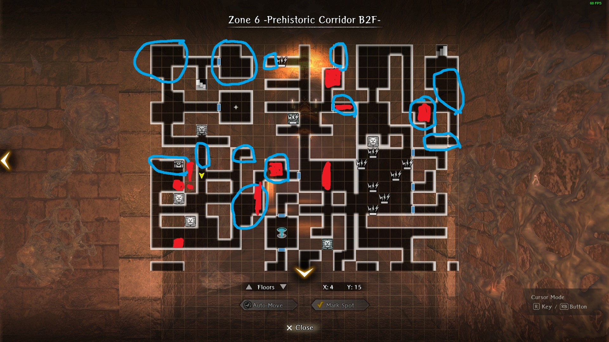

Farming
A note about powerleveling
Powereleveling refers to leveling up a low-level character quickly by defeating high-level enemies with the assistance of a high-level party. In this text, the term is applied liberally to refer to any kind of experience farming optimization.
A nuke refers to an all-rows AoE spell. All mages gain some element nuke at Lv.40, and legendary Mages + Alice have additional "Secret of" versions. These are typically required for efficient farming.
When leveling up a character from Lv.1 onwards, it is imperative to keep the target character's level below the threshold for the area, where gained experience starts dropping. There are a few ways to achieve this:
- Remove the target character from party before Inn visit to avoid level up
- In case of MC, change class before Inn visit to avoid level up
- Use in-dungeon fountains for camping1 to replenish HP/MP/SP, but without gaining levels. Teleporting out of a dungeon and back in again allows re-using fountains.
Warning
Doing a grade up will slow down your leveling. Don't do it unless you really need to!
Experience farming tips
If you're planning on farming a lot of EXP, it is worthwhile to optimize your approach beforehand. Focus on consistency and efficiency, so you can do it paying as little attention as possible. Timing the process can also be helpful, for example if you need a second or third nuke for every wave, the time it takes to perform can add a lot to the grand total.
The Adventurer's Passport and Elite Passport from Jeweler contain EXP gain boosts. These are normally paid upgrades, but have been made available also for free a few times already. These can be very useful to shave off time from a longer haul.
The Beginning Abyss
Experience Farming - Undead March
After reaching B8F, a request "Undead March" becomes available, consisting of four waves of almost exclusively undead enemies. This request gives 13,058 EXP per completion. Once you're strong enough to dispatch the waves with Mage/Priest nukes, this farm is quite fast, doable in under four minutes. This results in roughly 200,000 EXP per hour.
If you have Alice, a single nuke is enough to clear a whole wave. Other characters untested, but should also be serviceable at least as a pair, casting two consecutive nukes per wave.
Experience gains per character level:
- Lv.20: Full
- Lv.30: 66%
- Lv.39: 33%
- Lv.40: 16%
This means, the farm is only really good for ungraded characters, capped at Lv.20.
Strategy
Place MC in front row, rest don't matter as long as you can cast nuke(s). Ensure your spellcaster(s) always go before MC, to deal with the rare occasion when a nuke misses an enemy. Also make sure your MC is sufficiently equipped to dispatch any still-standing enemy in a single strike.
Steps:
- Cursed Wheel to "Warped Scene". This lands you at the entrance of B8F.
- Leave the dungeon by taking stairs to B7F, teleport to the entrance and use Harken.
- Visit Guild to accept request "Undead March".
- Return to B7F to complete the request.
- Return to town, visit Inn before next round.
Turning the mission in after completion yields some gold, but also takes ~30s and is entirely optional.
Port Town Grand Legion
Experience Farming - Repel Enemy Forces
This request becomes available after reaching the Ship in Port Town, from 7th District. Benefits are higher threshold (Lv.30) for maximum gains, higher overall gains and involves much less traveling. Request is immediately repeatable; optimal farming strategy is bailing out after two waves.
For a party with two to three mages able to cast four nukes each, two waves can be defeated twice for a total maximum gain of 20,646 EXP.
Experience gains per character level:
- Lv.30: Full
- Lv.40: 66%
For a Lv.40 party, the gains are similar to Lv.20 doing Undead March, in the ballpark of 200,000 EXP per hour. The time is a rough estimate, and also depends on if you need a third mage nuke or not.
Strategy
Grab the request from Guild after visiting Ship 1. This only needs to be done once, and the request should not be turned in. If you're taking the Cursed Wheel, go to "All Aboard" (or later) for the request.
Main enemies in both waves are Plague Crewmen, with over 900 HP. They are vulnerable to earth element, so having an earth nuke will help. It is possible to dispatch both waves with only two Lv.40 mages (Yekaterina and Adam tested), but this requires stacking Magic Power up to around 200 for each.
Note
This farm can be dangerous, if not paying attention to which wave you're on. The third enemy wave contains an Ore Collector, which is difficult and time consuming to kill. If you accidentally challenge the third wave instead of bailing out, quickest way out is intentionally getting your MC killed and using a flame to revive the party. There is no way to tell at the dialog screen, which wave is next, and the fight cannot be flee'd from.
Junk Farming
Map
{kind=link}
Guarda Fortress
Zone 6 Experience and Junk Farming
Main Fighting Routes
{kind=link}
Strategy
- Visit the circled routes for guaranteed enemies. The Alarm trap room also has many enemy spawns.
- Pick up any chests you see
- Heal at the fountain as needed
Battle tips
- Bring bonus magic beast damage (weapons, Abenius, etc)
- Nuke undead with MA/LA spells
- Run away from the horse. He's tedious and gives low experience
- Sentries in this floor minus the Cyclops have very low accuracy. You can evade most attacks just by having around 110-120 evasion. Having much more may guarantee not being hit at all entirely.
Alternate Farming Method - Zero to Minimum Fighting
 - Blue Circles indicate chest spawn areas. Red Areas indicate possible enemy spawns
{kind=link}
Strategy
- Harken to Zone 6 and check if there are any chests nearby to grab.
- If you see any chests near the Zone 5 to Zone 6 Staircase, Harken to Zone 5 to pick them up
- If not grabbage chests, leave and return.
Tips
- Keep in mind you cannot auto-path over the alarm trap on (X:4, Y:15). You need to first step on it manually, and then you can continue auto-pathing.
- See above Zone 6 Farming Battle Tips in case you enter into a fight.
Zone 1 + Zone 8 Junk Farm (Needs specific map variants)
Map
{kind=link}
Some Notes
- For Zone 1: There will be no patrolling sentries with this configuration so it will be easy to grab the chests that spawn in that room formation.
- For Zone 8: Some normal enemies include Vampires, Lesser Demons, Chimeras, and possibly even Cyclops. Be prepared to fight these.
Zone 10 Shinobi Junk + General Junk Farming
Map
{kind=link}
Strategy
- Obtain the Triumphant Return wheel step for Abyss 3 and unlock the Greater Harken on Zone 10
- Follow the green and red arrows
- Green arrows can be be traversed with autopathing. Due to how the sentries reset positions after each encounter, the autopathing avoids the sentries as long as you move immediately after claiming a chest (or finishing an encounter if no chest drops)
- Red arrows, wait for the sentry to pass then autopath
- Return via the Harken on Zone 9
Alternative Start
This same path can roughly be followed prior to obtaining the Triumphant Return step, however it is a bit more manual as it involves wheeling to the Zone 10 arrival, manually moving down past the sentries, then autopathing back up after clearing the bottom three encounters. It takes longer this way, but can be useful for folks that want to start this farm prior to saving the Duke.
Map
{kind=link}
Strategy
- Obtain the Triumphant Return wheel step for Abyss 3 and unlock the Greater Harken on Floor 10
- Wait at the door for the Sentry to pass by, exit and head to the three adjacent rooms to kill the enemies + collect chests
- Return to Harken avoiding the Sentry by the door
Battle Tips
- The possible sentry fights are:
- 1 Cyclops + 1 Frontline Succubus + 1 Backline Vampire + 1 Backline Succubus
- 1 Minotaur + 1 Greater Demon
- 1 Backline Vampire + Succubus + 1 frontline Vapire + Succubus
- You cannot run away from these, so make sure you can deal with these types of battles.
- The normal enemies on this floor also include vampires/succubi/minotaurs so be prepared to deal with them (Resistance, ASPD, Light Damage for vampires)
About this floor
- If you can reasonably kill the sentries, it is recommended to kill them in order to get more chances at Shinobi Junk, as they have a higher chance of dropping it compared to the normal monsters.
Catacomb Candle Farm
Map
{kind=link}
Strategy
- Obtain the Triumphant Return wheel step for Abyss 3 and Unlock the Catacombs by completing the Expose the Intruder Request
- Clear out the Catacombs and interact with the door puzzle on the top left of the map. Click on the light to activate the ability to interact with the candles.
- Interact with any candle besides the one near the entrance.
- Repeatedly light the candle and farm the chest drop.
Lulu will berate you for failing the puzzle, and has unique dialogue up to 3 times. On the 3rd time onwards she will just sigh at you
As of 1.8.0, this fight no longer guarantees chest drop (drops at normal rate). Also, the candles spawn random enemies from a set batch.

Elmon Farm (Le Bicken Cave Farm)
Map
{kind=link}
Strategy
- Complete Symbol of Alliance request from an ally to familiarize yourself with the map.
- Cursed Wheel to reset the request. To expedite farming, set the Inventory Refill (next to settings button) to automatically fill your team's inventory with the quest items you can afford when resting at an Inn. You can manually refill with this setting if don't need to rest between resets.
- Complete the request again while grabbing all the chests (The Gorgons only respawn on request reset and are guaranteed chest drops).
If you're not strong enough to fight the Gorgons easily, feel free to just go in and out of the map to collect chests with minimal battles, as chests respawn when you leave the map
Ninja Stuff Farm (Sand Shadow Cave Farm)
After Ver 1.12.0, you can now remove all the traps in the cave for easier farming by going to the boss room on B3F and flipping a switch on the wall left of the final chest
{kind=link}
Map
{kind=link}
Strategy
- Complete Paulownia Box Recovery request from the Royal Capital in its entirety to reveal the whole map and familiarize yourself with the route.
- You do not need to Cursed Wheel to reset the request. The route shown requires moving through one trap on the way back. Blue -> Green -> Red. Purple indicates possible mob encounters.
- Alternatively if you do not want to lose any fortitude, consider staying only on B1F using the route below. Simply auto-path to the red star and then the blue star, and then autopath out of the dungeon and repeat. Pick up any nearby chests if they slightly deviate from the route.
Map
{kind=link}
Experience Farming - Trial of the Heat-Haze B1F
Map
{kind=link}
Strategy
- Complete Paulownia Box Recovery request from the Royal Capital in its entirety and unlock this trial by clearing Abyss 3 at least once. If you have already completed this trial, you can reset it by simply cursed wheeling the Paulownia Box Recovery request and unlocking the trial again.
- The ideal way to farm exp is simply going to the first star indicated on the map closest to the entrance (guaranteed fight with 3 ninjas) and then leaving + re-entering. You could technically fight every sentry on the floor up to the teleporter, but they will be slightly more difficult than the non-sentry fight near the entrance and give the same EXP.
- It's recommended not to go past level 50 to maximize EXP gains for this farm.